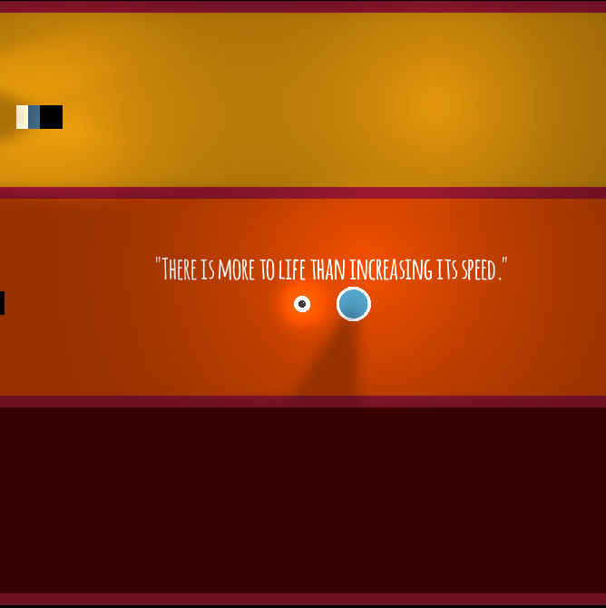

Ludum Dare #26: Results
May 21, 2013 · 2 minute read · CommentsGames development

Very early this morning, and after 20 days of voting, Ludum Dare #26 came to an end, giving way to the much anticipated final results.
How did I do?
Without further ado, these are the scores for Lightbyrinth compared to those of my previous entry.
| Category | Position | Percentile (2346 entries) | Score | Compared to #LD24 |
| Graphics | #242 | 90% | 3.57/5.00 | -7.03% |
| Mood | #326 | 87% | 3.18/5.00 | +19.10% |
| Audio | #400 | 83% | 2.97/5.00 | +10.02% |
| Overall | #457 | 81% | 3.26/5.00 | +33.06% |
| Fun | #485 | 80% | 3.06/5.00 | +38.46 |
| Humor | #670 | 72% | 2.07/5.00 | -22.84% |
| Innovation | #679 | 72% | 2.97/5.00 | +90.38% |
| Theme | #956 | 60% | 3.09/5.00 | +17.49% |
Despite the obvious room for improvement, I"m quite happy with these results.
Primarily, my performance compared to that of #LD24 has seen a significant increase in the most relevant categories, Whoooh! This game wasn’t supposed to be funny nor have highly polished graphics. My focus was on gameplay and, fortunately, people valued that positively. Actually where are my manners? Thanks everyone who’s taken the time to play and rate it, you"re awesome and made me happy.
Secondly and speaking in absolute terms, Lightbyrinth is above average in every single category and among the best 20% in many of them. This strikes me as a great surprise having seen the extremely high standards displayed in this Ludum Dare edition. This is, of course, considering the tight dev time. Moreover, the game has passed the 2.50 milestone in everything but “Humor”, which is fair enough.
Summary, I"m very pleased but determined to improve my jamming skills toward the next edition. More gameplay and drive to get a right feel.
Don’t miss these
I would be an egotistical prick if I didn’t point you to those who stand champions of the mighty Ludum Dare #26. Hail to them.
I was also very pleased to learn that MONO by TimTipGames won in the Overall category. Not only I loved his game but also he used libgdx to make it. Bi-winning!

Seriously, go check it out.
The community delivers once again
Among the things that make Ludum Dare incredibly awesome, the community stands out. There’s people out there that took the time to gather most of the games to make a gigantic trailer. Hats off.
More compilations here.
See you in the next Ludum Dare!